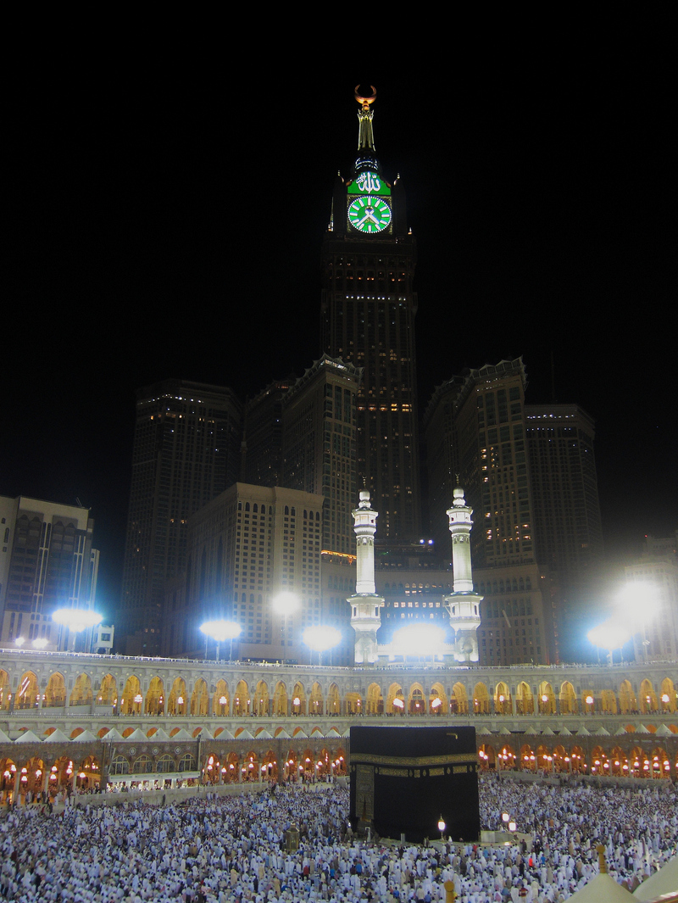

How the Hajj and Umrah are organized: quotas, queues and rules
The Hajj is the fifth pillar of Islam. Its timing and rites, the Saudi quota system, global pilgrim numbers, and how Hajj and Umrah are registered from Uzbekistan — a facts-only guide.

The Hajj is the fifth pillar of Islam — obligatory once in a lifetime for every adult Muslim who is able (has the means, istita'ah). The following sets out, from official sources, the timing and rites of the Hajj, the quota system set by Saudi Arabia, and how pilgrims register for the Hajj and Umrah from Uzbekistan. This is a general guide.
When and where the Hajj takes place
The Hajj is performed from the 8th to the 12th (sometimes 13th) of Dhul-Hijjah, the last month of the Islamic lunar calendar. Because the lunar year is about 11 days shorter than the solar year, the Hajj moves roughly 11 days earlier each Gregorian year. It centers on Mecca, Saudi Arabia — the Masjid al-Haram and the Kaaba, plus the ritual sites of Mina, Mount Arafat and Muzdalifah.
The main rites of the Hajj are: entering the state of ihram (intention and special garments); circling the Kaaba seven times (tawaf); walking seven times between Safa and Marwah (sa'i); standing at Mount Arafat on 9 Dhul-Hijjah (wuquf — the essential rite of the Hajj); spending the night at Muzdalifah; and stoning the pillars at Mina (ramy).
How it differs from the Umrah
The Umrah is the "lesser pilgrimage" — consisting of tawaf and sa'i in Mecca. Unlike the Hajj, the Umrah is not obligatory and may be performed at any time of year; the Hajj is fixed to the appointed days of Dhul-Hijjah.
How the quota system works
Because of the limited space at the holy sites — especially at Mina — the Organisation of Islamic Cooperation (OIC) set a quota formula in 1987: 1,000 pilgrims for every 1 million Muslims in a country's population (that is, 0.1%). Saudi Arabia sets these quotas and sometimes reduces them — for example, quotas were cut by roughly 20% during years when the Masjid al-Haram was being expanded.
During the COVID-19 pandemic the Hajj was sharply restricted: in 2020 only about 1,000 people already inside the Kingdom took part, and in 2021 about 60,000 vaccinated domestic pilgrims. The restrictions were then lifted in stages.
Global pilgrim numbers
According to Saudi Arabia's statistics authority (GASTAT), in the pre-pandemic year 2019 a total of 2,489,406 people performed the Hajj (1,855,027 of them from abroad). After the pandemic: 1,833,164 people in 2024 and 1,673,230 in 2025. These figures vary somewhat from year to year.
The Hajj from Uzbekistan: quota and cost
Uzbekistan's Hajj quota has grown markedly in recent years: about 7,200 in 2019, rising to 12,000 in 2022 and to 15,000 from 2023 (around 15,000 in 2023, 2024 and 2025). The cost is also updated yearly: according to Kun.uz, the price of the 2025 Hajj trip was set at about 78.67 million soums per person.
The queue and registration
In Uzbekistan the selection for the Hajj is organized by the Committee on Religious Affairs and the Muslim Board of Uzbekistan on the basis of an electronic queue. In October 2025 a unified "Hajj and Umrah" portal (haj-umra.gov.uz) was launched, moving applications and the queue fully online; the stated aim is transparency and reducing the "human factor" in how the queue forms. Because demand far exceeds the roughly 15,000 annual places, long waiting lists exist.
The Umrah from Uzbekistan
Umrah trips are organized only through licensed tour operators. After reforms in 2024, the Committee on Religious Affairs became the licensing authority, and the mandatory reserve (a "pilgrimage fund") for operators was raised from $100,000 to $1 million. As a result, the number of licensed operators fell from 134 in February 2024 to 12 by November, later rising to 14.
A note
This article is general information; quotas, prices and registration rules change from year to year, and exact terms should be checked with official sources. Sources: Encyclopaedia Britannica, Saudi Arabia's statistics authority (GASTAT), Uzbekistan's Committee on Religious Affairs (gov.uz), Kun.uz and Gazeta.uz.
Sources
- Encyclopaedia Britannica — Hajj (rites, timing, meaning)
- General Authority for Statistics (GASTAT), Saudi Arabia — Hajj statistics 2019/2024/2025
- Organisation of Islamic Cooperation — 1987 Hajj quota formula (0.1% of Muslim population)
- Committee on Religious Affairs / gov.uz — Uzbekistan Hajj quota and unified Hajj–Umrah portal (haj-umra.gov.uz)
- Kun.uz — Uzbekistan Hajj 2025 cost and quota
- Gazeta.uz — 2024 Umrah licensing reform (pilgrimage fund raised to $1 million)